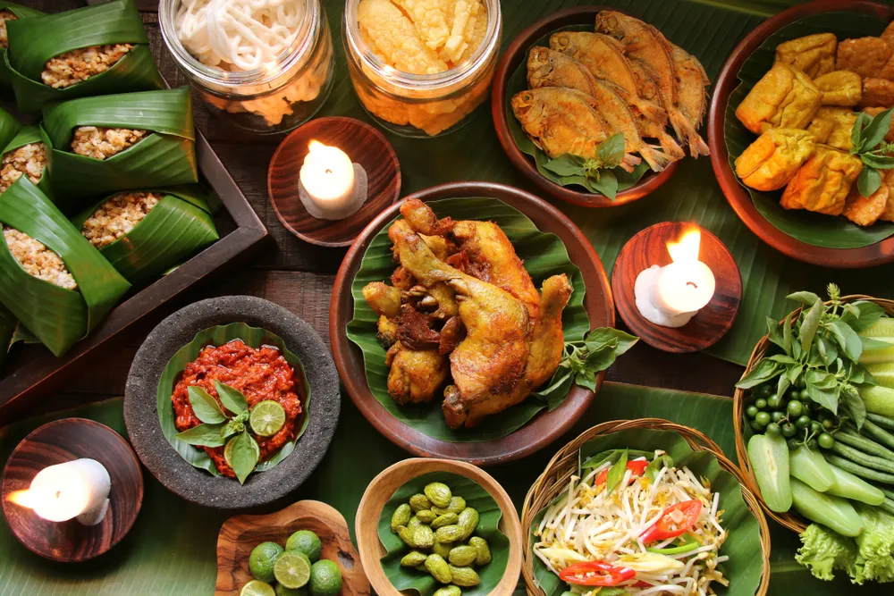
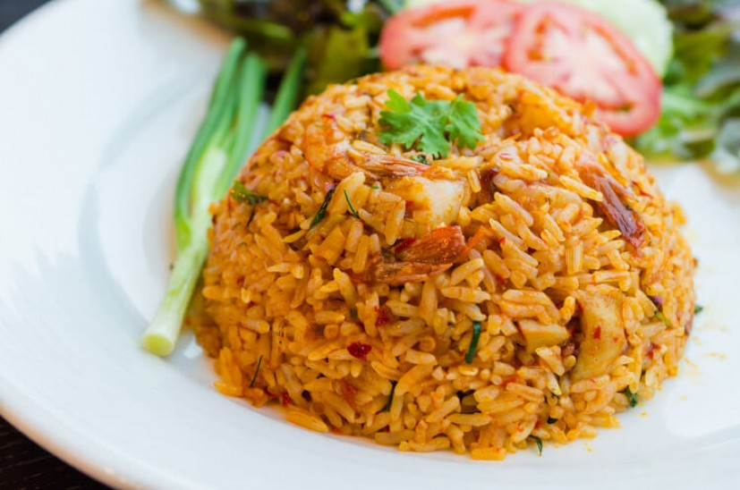
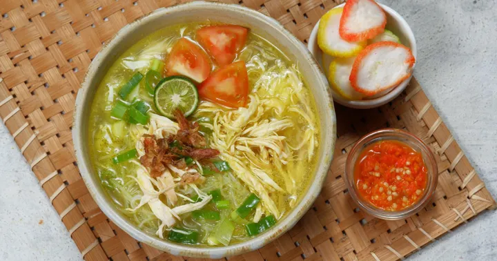
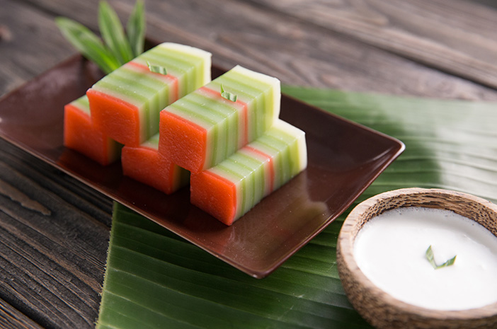
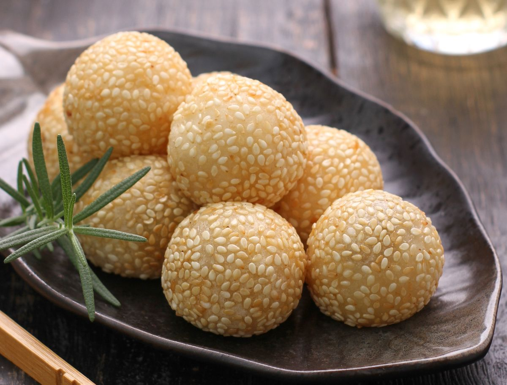
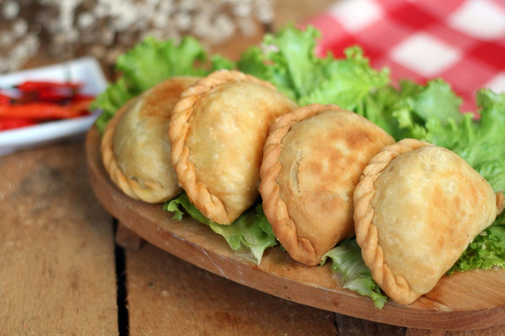
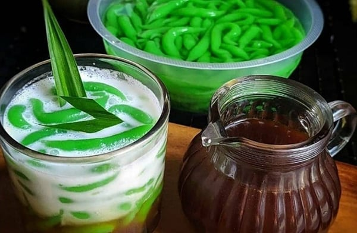
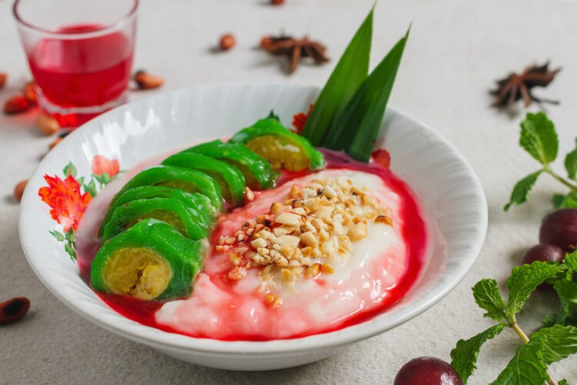
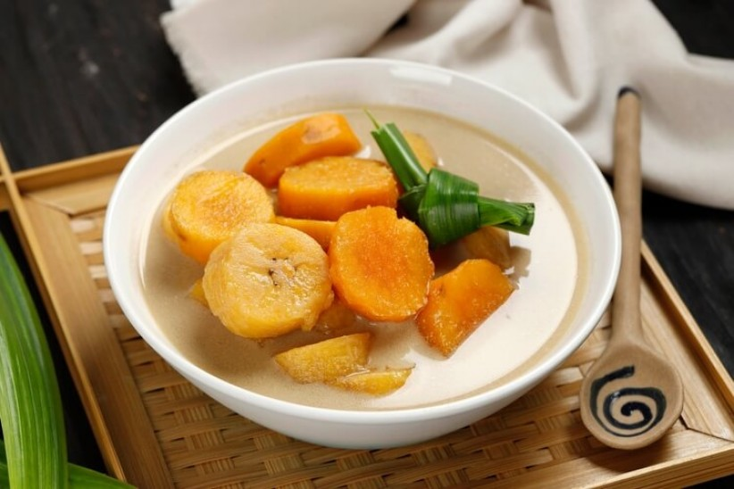

Platery adalah tempat berbagi resep, ide masakan, dan kreasi dapur dari para pecinta kuliner di seluruh Indonesia. Mulai dari masakan rumahan sederhana hingga hidangan spesial semua bisa kamu temukan di sini!
Jadilah bagian dari komunitas Platery dan bagikan resep lezat Anda dengan jutaan pengguna di seluruh Indonesia. Dapatkan tips memasak dari chef profesional dan pengguna lainnya.









Oleh: Chef Rachul
Waktu Masak: 45 menit
Komunitas Platery adalah ruang berkumpulnya para pecinta masakan Indonesia. Di sini, kamu bisa berbagi resep, berdiskusi seputar teknik memasak, serta saling menginspirasi melalui kreasi dapur dari berbagai daerah.
Bertanya dan berbagi tips memasak bersama pengguna lain, mulai dari pemula hingga yang sudah berpengalaman.
Bagikan resep andalanmu dan biarkan orang lain mencoba kreasi masakan khas buatanmu sendiri.
Ikuti berbagai event dan tantangan memasak menarik yang diadakan oleh komunitas Platery.
Punya resep favorit yang ingin kamu bagikan? Ayo berkontribusi dan jadi bagian dari komunitas Platery!
Bagikan Resep Saya